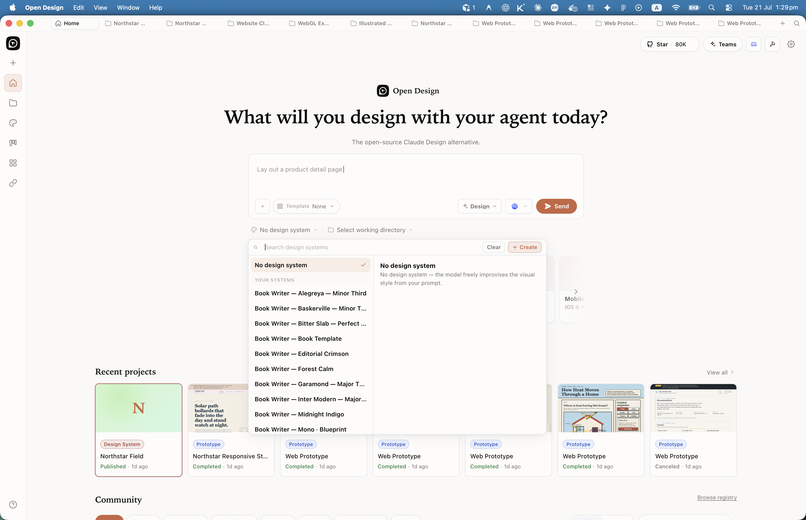
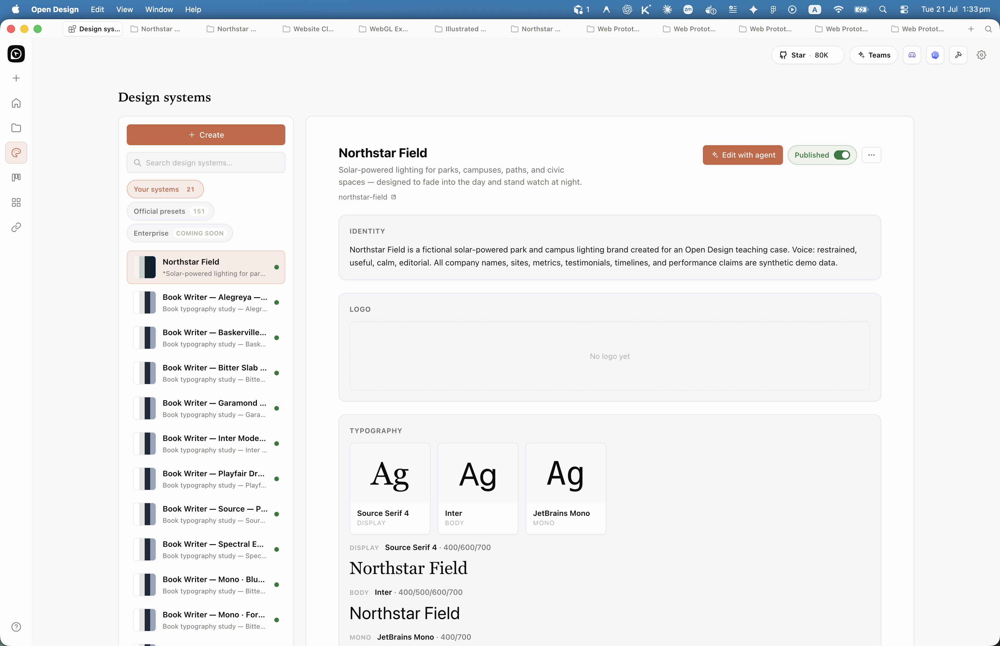
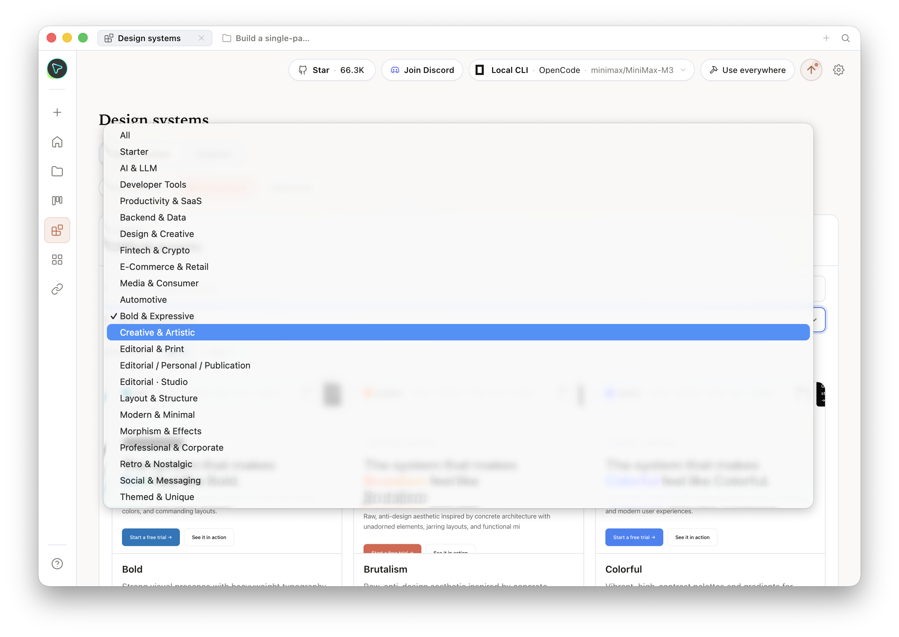
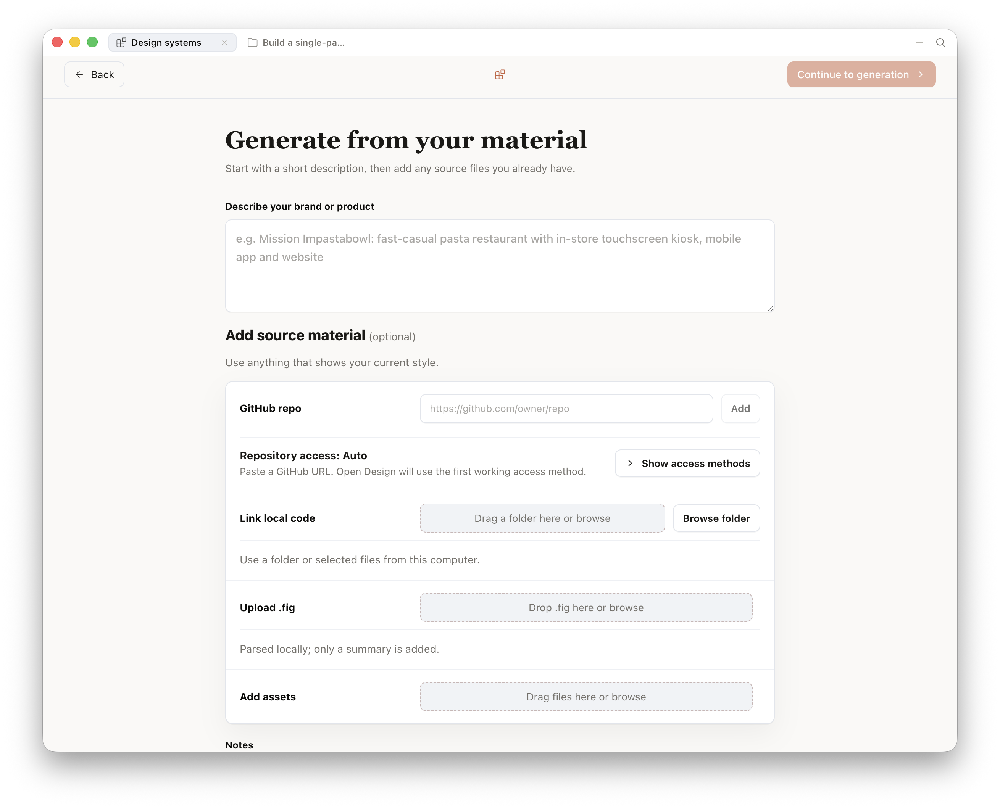

Chapter
05
150 Brand Systems
DESIGN.md as the contract between brand and agent
A DESIGN.md file is a machine-readable brand contract, and authoring your own is how you make every agent-generated artifact stay on-brand. Open Design ships a library of bundled brand systems to get you started. The real work is writing one for your house.
5.1 The Bundled Brand System Library
The Brand Contract
Open Design ships a library of portable brand systems as of June 2026. Each one is a DESIGN.md file---the brand contract---that tells the agent exactly how to render artifacts in that brand's visual language. The library exists so you can prototype against a known design language before you build your own, and so you can study how a production-grade brand contract is structured.
The official website at open-design.ai/systems/ lists 150 portable systems as of June 2026; the GitHub README at github.com/nexu-io/open-design states "142+ Design Systems," which is the floor count of systems in the bundled directory. Some systems ship both as a DESIGN.md in the bundled directory and as a plugin wrapper, which accounts for the gap. The canonical claim is "150 portable systems as of June 2026" per the Open Design website; verify the current count at the repo for your version.
The library spans categories including Fintech, Productivity, Developer Tools, E-Commerce, Social and Media, Automotive, Enterprise, and Consumer. Named systems include brands like Linear, Stripe, Vercel, Airbnb, Notion, and Figma---referred to here nominatively for learning and structural reference only.
Trademark notice: The bundled brand systems are reference materials for studying design-system structure, not a license to ship another company's visual identity. If you generate a prototype using a famous brand's DESIGN.md, that prototype is for learning and internal evaluation. Ship your own brand, not someone else's trademarked identity.
A portion of the bundled systems originated from the community collection at VoltAgent/awesome-design-md (a publicly available, community-contributed set of DESIGN.md files); the remainder are hand-authored systems bundled directly in the Open Design repository. The exact split is documented in each system's manifest.json source field within the design-systems/ directory of the Open Design repo. Note that the VoltAgent/awesome-design-md collection carries its own per-system licensing; verify the upstream license for any system before using it beyond local prototyping.
The table below identifies eight selected systems by brand name, category, and the prototyping use case each DESIGN.md bundle suits best. These are nominative identifications of what Open Design ships in its design-systems/ directory, not reproductions of any brand's proprietary design guidelines. Each brand name is the property of its respective owner; see the trademark notice below.
| Brand | Category | Design language style | Good for prototyping |
|---|---|---|---|
| Linear | Developer Tools | Dark-mode developer-tool aesthetic, high information density | Issue trackers, project management dashboards |
| Stripe | Fintech | Clean merchant UI with strong data table conventions | Payment flows, financial dashboards, settings pages |
| Vercel | Developer Tools | Minimal, code-centric layout with sharp structural lines | Deploy pipelines, status boards, developer tools |
| Airbnb | E-Commerce | Photography-led, card-heavy marketplace layout | Marketplace listings, booking flows, profile pages |
| Notion | Productivity | Document-first, block-based layout with low visual noise | Note-taking UIs, knowledge bases, wikis |
| Figma | Developer Tools | Canvas-based tool layout with toolbar and side-panel conventions | Design tools, canvas applications, sidepanel patterns |
| Neutral Modern | Starter | Greyscale with cobalt primary, minimal opinionation | Generic prototypes where brand is not defined yet |
| Cisco | Enterprise | High-contrast accessible palette, dense data table layout | Enterprise software, admin panels, network dashboards |
My take: Open Design ships a large library of bundled brand systems. Most teams use one---their own. The bundled library solves a discovery problem: it shows you what a well-structured brand contract looks like across eight categories, so you have concrete examples when you sit down to author your house system. I study three or four before writing a new DESIGN.md. I don't use any of them in production.
On the home composer and inside a project, the design-system picker is a first-class lever: open it before you send a prompt to bind a DESIGN.md, or switch systems mid-session without leaving the chat. The sidebar Design systems rail is the management surface for installed systems, presets, and org-shared libraries.



5.2 The DESIGN.md Schema
Anatomy of the Brand Contract
DESIGN.md is an open specification published by Google Labs as part of the Stitch project (per blog.google, announced 2025); Stitch was subsequently succeeded by the hosted Claude Design tool. Open Design adopted the specification and extended it. The spec defines a single Markdown file with optional YAML front matter for compiled tokens and Markdown prose sections for rationale and rules. The brand contract---colors, type, spacing, layout, components, motion, voice, brand identity, and anti-patterns---lives in nine named sections.
Two-Layer Structure
Every DESIGN.md has two layers. The YAML front matter is the compiled token layer---machine-readable values the daemon injects into skills. The Markdown prose is the rationale layer---human-readable rules and reasoning the agent reads to understand intent behind the tokens. Both layers matter. An agent that can read the prose understands why cobalt is the primary color and when to deviate; one that only reads tokens cannot.
DESIGN.md
├── YAML front matter (optional)
│ └── token key-value pairs
│ ├── colors.primary: "#2F6FEB"
│ ├── type.sans: "Inter"
│ └── spacing.md: "16px"
└── Markdown prose sections
├── ## Colors
├── ## Typography
├── ## Spacing
├── ## Layout
├── ## Components
├── ## Motion
├── ## Voice
├── ## Brand
└── ## Anti-PatternsAlongside the DESIGN.md file, each bundled system ships a manifest.json, a compiled tokens.css, an optional components.html for reusable HTML snippets, and an assets/ folder for any included imagery. The manifest validates the system's identity, category, and file locations.
| Section | Contains | Example entry |
|---|---|---|
| Colors | Background, foreground, primary, semantic (success, warning, error), surface tones | Primary: #2F6FEB (cobalt) |
| Typography | Font families, scale (h1 through caption), line-height, letter-spacing rules | Font family: Inter, scale: 12–64px |
| Spacing | Named spacing values (sm, md, lg, xl), grid definitions | --space-md: 16px; gutter: 24px |
| Layout | Grid columns, max-width, breakpoints, safe zones | 12 columns, 1200px max-width |
| Components | Button, card, input, modal, badge specs with radius, padding, border | Button: 8px radius, 10/16px padding |
| Motion | Easing curves, durations, motion principles (spring, linear, instant) | ease-out 200ms for entrances |
| Voice | Tone, sentence structure rules, punctuation conventions, word choices to avoid | "Confident, plain, no exclamation marks" |
| Brand | Brand identity statement, usage principles, logo placement rules, co-branding constraints | "Dark-first; never use the accent on dark backgrounds" |
| Anti-Patterns | Explicit list of what the agent must not do --- the negative space of the brand | "Never use drop shadows. Never use gradients on buttons." |
The Manifest and tokens.css
The manifest.json is the identity card for a brand system. It declares the schema version, a unique ID, a human name, a category, a description, a source attribution, and the file locations. Modern systems must pass the manifest guard on import; legacy systems without a manifest still work but are skipped by the pnpm validation step.
/* manifest.json for a house brand system (fictitious "Acme" example;
schema documented at github.com/nexu-io/open-design — Apache-2.0) */
{
"schemaVersion": "1.0",
"id": "acme-brand",
"name": "Acme",
"category": "Enterprise",
"description": "House brand system for Acme Corp.",
"source": {
"type": "internal",
"url": ""
},
"files": {
"design": "DESIGN.md",
"tokens": "tokens.css",
"components": "components.html"
}
}The tokens.css is the compiled CSS custom-property form of the DESIGN.md token values. Skills and the preview renderer both read it directly. Open Design documents two authoring paths: write tokens.css by hand alongside your DESIGN.md and keep them in sync manually, or generate it from YAML front matter if your workflow includes a compile step. The hand-authored path is the more common starting point for house brand systems.
/* tokens.css - canonical compiled CSS custom properties
Structure documented at github.com/nexu-io/open-design (Apache-2.0).
Values below are from the Neutral Modern starter (Open Design default system). */
:root {
--color-bg: #FAFAFA;
--color-fg: #111111;
--color-primary: #2F6FEB;
--color-success: #1EA855;
--color-warning: #E5A900;
--color-error: #D64545;
--type-sans: 'Inter', -apple-system, BlinkMacSystemFont, sans-serif;
--type-scale-h1: 64px;
--type-scale-body: 16px;
--type-line-body: 1.4;
--space-sm: 8px;
--space-md: 16px;
--space-lg: 24px;
--radius-sm: 4px;
--radius-md: 8px;
}5.3 How Brand Flows Into Artifacts
From Contract to Rendered Artifact
Understanding how the brand contract reaches a rendered artifact is what separates teams that get consistent output from teams that get inconsistent output. The path is a three-tier hierarchy: brand tokens win, then craft rules fill gaps, then skill defaults are the last resort. A skill that declares od.design_system.requires: true causes the daemon to inject the active brand system into the agent's context before generation begins.
The Three-Tier Hierarchy
When a skill runs, the daemon resolves design tokens in this order:
- Brand tokens (DESIGN.md wins): If the active brand system defines a value---say,
--color-primary: #0B5FFF---that value is used. No overrides. - Craft rules (fill gaps): The craft layer defines universal design principles that apply when DESIGN.md is silent. Accessible contrast ratios, minimum tap target sizes, and whitespace conventions live here. The craft layer is referenced in the Open Design skills-protocol documentation; specific craft file examples are implementation details that may vary by version.
- Skill defaults (last resort): If neither DESIGN.md nor craft rules cover a value, the skill's own defaults apply. These are intentionally neutral so they don't compete with the brand.
This hierarchy is why skills produce consistent output without needing the author to specify every visual detail in each prompt. The brand contract handles the visual layer; the skill handles the structural layer.
Colors, type, spacing, voice, anti-patterns
Structure, layout regions, self-check rules
Active brand tokens + skill prose merged into system prompt
HTML with brand tokens applied, structure from skill, voice from DESIGN.md
Skill Integration Mechanisms
Skills can access the active DESIGN.md through three mechanisms, each appropriate to different use cases:
# Mechanism 1: System-prompt injection (most common)
# Declare in skill YAML front matter
od:
design_system:
requires: true
sections: ["colors", "typography", "components"]
# Daemon injects only the specified sections as a system-prompt prefix.# Mechanism 2: Direct file read
# The skill instructs the agent to read the active DESIGN.md at runtime.
# Use when the skill needs the full prose, not just token values.
# Mechanism 3: Mustache template variables
# The skill uses {{design.colors.primary}} in its prompt template.
# Daemon replaces these before sending to the agent.System-prompt injection is the default because it keeps the skill's context window focused---injecting only the three or four sections a skill actually uses rather than the entire DESIGN.md. For a components-heavy skill like a dashboard, you'd declare sections: ["colors", "components", "spacing"]. For a content skill like a doc or email, you'd declare sections: ["typography", "voice"].
Lookup Order
The daemon looks for a DESIGN.md file in this order:
1. ./DESIGN.md (repo root, highest priority)
2. ./design-systems/DESIGN.md
3. User-configured path (set in Open Design settings)
4. Active system selected in the project UI
5. System default (Neutral Modern, the built-in starter)This means placing a DESIGN.md at the root of your project repo is all you need to activate your house brand system for every artifact generated in that project. No configuration required beyond the file existing.
5.4 Picking and Combining Systems
Selecting the Right Brand Contract
Picking a bundled system for a prototype is a one-click decision in the Open Design project UI---you select a brand from the library and every subsequent artifact in that project uses its tokens. Combining systems is more deliberate: you layer rules from one DESIGN.md on top of another by merging their sections. Both approaches are worth understanding, even if combining is something you'll rarely need.
Choosing a Single System
The fastest way to pick a system for prototyping is to match the visual language the stakeholder already knows. If you're building a feature for a developer tool, a brand with geometric dark-mode tokens gives reviewers a familiar frame---they focus on information architecture, not color preferences. If you're building a consumer experience, a photography-led card-heavy system shifts attention toward content density and touch targets.
For internal prototyping where you have your own brand, select your house DESIGN.md. If you haven't authored one yet, use Neutral Modern---the built-in starter is intentionally opinionated enough to produce clean output but neutral enough not to confuse stakeholders.
When you select a bundled system for a prototype, note which three rules you most want to borrow. That list is the seed for your own DESIGN.md when you're ready to author it. The anti-patterns section is especially worth reading---it tells you what the system considers a cardinal sin, and those constraints are often more informative than the positive rules.
Layering Brand Rules
Combining two systems means merging their DESIGN.md sections manually. The pattern is: take one system as the base (usually the one with the richer component spec), then override specific sections from a second system (usually for voice or motion). Keep the override minimal---replacing more than two sections usually produces incoherent output because the visual decisions in a brand system are interdependent.
The safest layering approach is additive: add sections that the base system doesn't define rather than replacing sections it does define. If your base system has no Motion section and you want animation conventions, add the Motion section from another system. If it already has a strong Motion section, leave it alone.
Combining two brand systems that both have strong color opinions will produce conflicting token values. The daemon resolves conflicts by taking the first token value found in the merged file. If you're merging, put the tokens you want to win at the top of the merged DESIGN.md.
5.5 Authoring Your Own DESIGN.md
Building the House Brand Contract
Authoring your own DESIGN.md is a two-hour investment that pays back on every artifact your team generates. The file doesn't have to be complete---a DESIGN.md with only Colors, Typography, and Voice sections is better than no DESIGN.md at all, because those three sections cover the majority of visual decisions in a typical prototype. Start there and add sections as you see artifacts diverge from your intent.

tokens.css as a starting point for your house system. Real screenshot of Open Design v0.9.0 (captured June 2026).Step-by-Step
Start with the built-in starter. Copy design-systems/default/DESIGN.md (Neutral Modern) from the Open Design repository to your project root. This gives you a valid, tested structure with all nine sections present as stubs. Edit rather than author from scratch.
Fill Colors first. Replace Neutral Modern's color values with your brand palette. Name every color semantically---not blue but primary, not light-gray but surface. Agents reason better with semantic names.
## Colors
- Background: #0A0A0A
- Foreground: #FAFAFA
- Primary: #0B5FFF (cobalt)
- Surface: #161616
- Success: #22C55E
- Warning: #F59E0B
- Error: #EF4444
- Border: #2A2A2AFill Typography next. Name your typefaces, set the scale, and write the line-height and letter-spacing rules. If you use a single typeface for everything, say so explicitly---it prevents the agent from introducing a second face.
## Typography
- Font family: "Geist", -apple-system, system-ui, sans-serif
- Mono: "Geist Mono", monospace
- Scale: 12px (caption), 14px (body-sm), 16px (body), 20px (h4),
24px (h3), 32px (h2), 48px (h1)
- Line height: 1.5 (body), 1.2 (display)
- Letter-spacing: -0.03em on h1/h2, 0 elsewhere
- Weight: 400 (body), 600 (semibold), 700 (bold)Write Voice before Components. Most teams write components and ignore voice. Voice is where generated artifacts diverge most visibly from brand identity---button labels, empty states, error messages, and modal copy all read as generic AI text if you don't constrain them. A five-line Voice section prevents that.
## Voice
- Tone: direct, confident, no-marketing-speak
- Sentence structure: short subject-verb-object, under 15 words
- Punctuation: no exclamation marks, no ellipses
- Avoid: "Get started", "Unlock", "Powerful", "Seamless"
- Prefer: "Create", "Open", "Build", "Run"Add the Anti-Patterns section. This section is the most underused and the most valuable. Write explicit prohibitions---the things you've seen agents do wrong with your brand. Every prohibition here prevents a class of regeneration cycles.
## Anti-Patterns
- Never use drop shadows; use border or elevation tokens instead
- Never use gradients on interactive elements
- Never center-align body text
- Never use more than two font weights on one screen
- Never use rounded corners larger than 8px
- Never show skeleton loaders with rounded circles for textCreate the companion tokens.css. Translate your DESIGN.md color, typography, and spacing values into CSS custom properties. Place this file in the same directory as your DESIGN.md. The preview renderer and every skill will pick it up automatically.
/* tokens.css */
:root {
--color-bg: #0A0A0A;
--color-fg: #FAFAFA;
--color-primary: #0B5FFF;
--color-surface: #161616;
--color-border: #2A2A2A;
--type-sans: 'Geist', -apple-system, system-ui, sans-serif;
--type-mono: 'Geist Mono', monospace;
--type-scale-h1: 48px;
--type-scale-body: 16px;
--space-sm: 8px;
--space-md: 16px;
--space-lg: 24px;
--space-xl: 48px;
--radius-sm: 4px;
--radius-md: 8px;
--radius-lg: 12px;
}Create the manifest.json. Add a manifest so your system passes the validation guard and appears correctly in the project UI.
{
"schemaVersion": "1.0",
"id": "acme-brand",
"name": "Acme",
"category": "Enterprise",
"description": "House brand system for Acme Corp.",
"source": { "type": "internal", "url": "" },
"files": {
"design": "DESIGN.md",
"tokens": "tokens.css"
}
}Test with three different skills. Generate a prototype with a dashboard skill, a landing-page skill, and a form skill. Look for any place the output diverges from your brand intent---that divergence points to a missing or ambiguous rule in your DESIGN.md. Add the rule; regenerate; compare. After three rounds, you'll have a stable contract.
Starting From Figma
If your team already has a Figma design system, Open Design's plugin ecosystem includes migration tooling for extracting token values from external sources. Check the Open Design plugin registry for a current Figma-to-DESIGN.md extraction workflow, as plugin availability and naming can change between versions. If extraction tooling is available, treat its output as a skeleton---automated extraction misses rationale, voice rules, and anti-patterns, which you'll need to write by hand.
My take: Authoring one good house DESIGN.md returns more value than all 150 bundled systems combined. I don't say that to dismiss the library---I say it because teams generate for their own brand far more often than they prototype against a famous one. Spend the time on Voice and Anti-Patterns. Colors are the easy part; any designer can pick a hex code. Anti-patterns are where institutional knowledge lives, and they're the section most teams skip because it requires discipline to write prohibitions before you see the violation.
5.6 Keeping Brand and Code in Sync
Bridging DESIGN.md and Your Production Codebase
Authoring a DESIGN.md solves the generation problem---every artifact the agent produces matches your brand. But it creates a secondary problem: your production codebase has its own design tokens, likely as CSS custom properties or a Tailwind config, and they will drift from DESIGN.md unless you actively maintain both. The brand contract is only as valuable as its accuracy against what's actually shipped.
The Drift Problem
Drift looks like this: your DESIGN.md says the primary button is border-radius: 8px, but the production codebase uses border-radius: 6px after a design refresh six months ago. Artifacts generated today will use 8px. Stakeholders approve the prototype. Developers implement it and notice the 2px discrepancy. Someone changes one but not the other. Now you have two sources of truth, and neither is authoritative.
Brand in sync:
# DESIGN.md
Button: 8px radius
# tokens.css
--radius-button: 8px;
# production tailwind.config.js
borderRadius: { button: '8px' }All three sources agree. Artifacts match production. Prototypes are accurate.
Brand drift:
# DESIGN.md (stale)
Button: 8px radius
# tokens.css (stale)
--radius-button: 8px;
# production tailwind.config.js (updated)
borderRadius: { button: '6px' }Production diverged. Artifacts look like a six-month-old version of the product. Stakeholders approve inaccurate prototypes.
The Code-Refresh Plugin
Open Design includes a code-migration scenario plugin that closes this loop. You point the plugin at a git repository and an active DESIGN.md, and it produces a refactoring pull request that updates the codebase's token definitions to match the brand contract. The plugin's exact name in v0.9.0 is documented in the plugins/_official/ folder of the Open Design repository; the 0.8.0 release notes reference codebase refactoring capability per the open-design.ai blog (2025). The plugin is covered in depth in section 9.4; this section focuses on the conceptual pattern.
The code-refresh workflow runs in both directions:
- DESIGN.md is authoritative: Use the plugin to update production tokens to match the brand contract. This is the right direction when DESIGN.md was written first and production hasn't caught up.
- Production is authoritative: Use the plugin to extract current token values from the codebase and update DESIGN.md. This is the right direction when production was updated by hand and DESIGN.md is stale.
| Situation | Authoritative source | Plugin direction | Outcome |
|---|---|---|---|
| New brand system, starting fresh | DESIGN.md | DESIGN.md → codebase | Production tokens updated to match contract |
| Design refresh happened in Figma or CSS, DESIGN.md stale | Production codebase | Codebase → DESIGN.md | Brand contract updated to reflect current production state |
| Both are out of date | Neither | Manual review first; then one direction | Settle the canonical values before automating anything |
Keeping Them in Sync Over Time
Treat DESIGN.md as a design-system PR companion. When a design decision changes in production---a component gets a new radius, a color is updated for accessibility---the same PR that updates the component also updates DESIGN.md and tokens.css. Two extra minutes on a PR review prevents months of drift. I add a checklist item to every design-adjacent PR: "Does this change a design token? Update DESIGN.md and tokens.css."
Next: Skills and brand systems are the generation engine. Chapter 06 puts them to work on the most-used artifact family---web and mobile prototypes. You'll run real generation loops for a single-page web UI, a multi-screen mobile flow, and a live dashboard, and you'll see how the brand contract we wrote here shapes every output.